Rockabilly: Um dos primeiros subgêneros do Rock. Esse nome se deu pela junção com a palavra hillbilly, que faz referência à música country americana.
Principais Nome: Carl Perkins, Gene Vincent, Jonhy Cash, Eddie Cochran, Johnny Burnette e Dorsey Burnette. Classic rock: Um estilo eclético de rock, que busca misturar diversos estilos. Com uma pegada country, um dos estilos de rock mais conformistas.
Principais Nome: Elvis Presley, Chuck Berry, Bo Diddley.
Década de 60
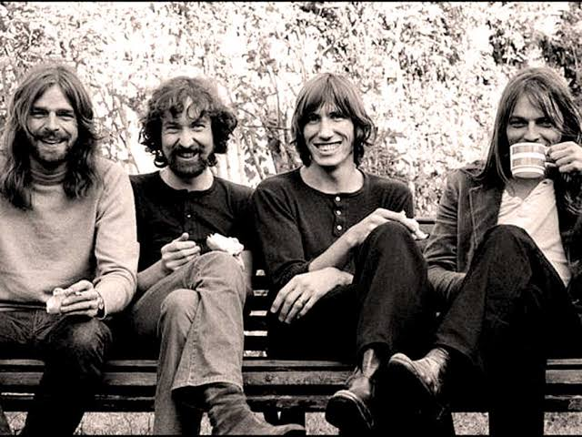
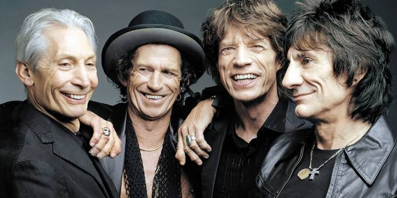
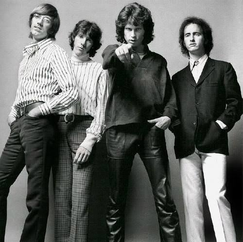
Psicodelismo/Acid rock: Estilo que veio da tentativa de transmitir as afetações causadas pelo uso do LSD. As distorções no som, somadas aos efeitos, buscava reproduzir os efeitos da droga.
Principais Nome: The Doors, Jefferson Airplane, Grateful Dead, Love e Jimi Hendrix. Rock experimental: Mais um som de mistura. Com grande complexidade musical, costumava ser confundido com rock progressivo, mas sua diferença está nas pegadas regionalistas e religiosas, além da utilização de outros instrumentos.
Principais Nome: Beatles (fase final), Iron Butterfly, Jimi Hendrix, Frank Zappa e Nação Zumbi. Rock progressivo: Caracterizado pelas músicas de longa duração, além das misturas apropriadas de cada pátria da banda que desenvolve as canções. Uma das linhas mais complexas do rock, nasce durante a conjuntura de liberdade do pós-guerra e início da Guerra Fria. Clama por liberdade e amor.
Principais Nome: Yes, Genesis, Emerson, Lake & Palmer, Pink Floyd, Marillion, King Crimson, Rush e Janis Joplin. Ópera rock: Estilo de rock que não diz respeito a toda uma geração, mas a uma opção estética utilizada por algumas bandas. O lance é contar uma história em uma única canção se utilizando dos elementos líricos e da pegada rock.
Principais Nome: “Tommy” e “Quadrophenia”, do The Who, “Arthur”, do The Kinks, “S.F. Sorrow”, do The Pretty Things e “The Wall”, do Pink Floyd e “Bohemian Rhapsody”, do Queen. Blues rock: Com uma forte influência do Blues, esse estilo originou o hard rock, um estilo mais vintage e purista.
Principais Nome: Rolling Stones, Janis Joplin, Doors, Cream e The Who.
Década de 70
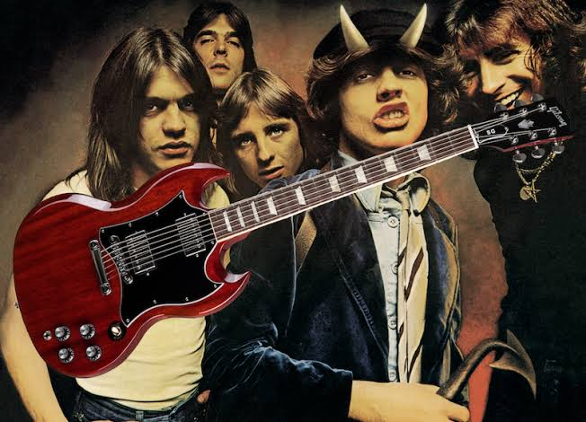
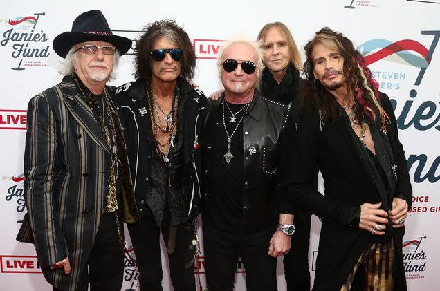
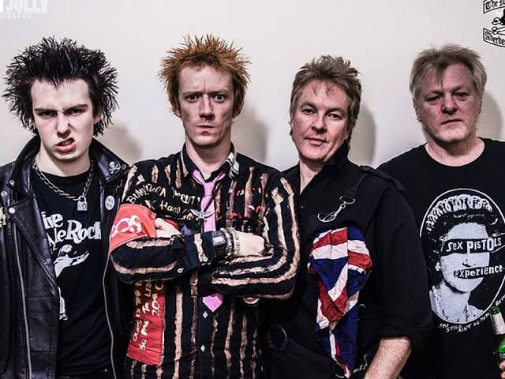
Hard rock: O grande estilo da época, saudosista e clássico. É o auge do estilo rock n’ roll mais puro.
Principais Nome: Led Zeppelin , Black Sabbath, Deep Purple, AC/DC, KISS, Queen, Rainbow, Whitesnake, Grand Funk Railroad, Blue Cheer, Aerosmith, Guns N’ Roses e Van Halen. Glam rock: O auge da liberdade sexual, o rock vem todo subversivo e mostrando que homem também se preocupa com o estilo e com o brilho! A voz fina e cabelo longo nos acompanham até hoje.
Principais Nome: New York Dolls, Gary Glitter, T-Rex, David Bowie, Roxy Music, Slade, Heart e Secos & Molhados. Punk rock:O punk rock nasce no final dos anos 70. O auge da Guerra Fria tornou impopular diversas práticas das bandas mais famosas, como o enriquecimento exacerbado, o luxo e as ostentações. A subversividade do rock foi uma exigência para os fãs, as letras pregavam revolução e mudança. O rock aqui virou crítica social.
Principais Nome: Iggy Pop & The Stooges, The Troggs, Sex Pistols, The Clash, Television, Ramones e Bad Religion.
Década de 80
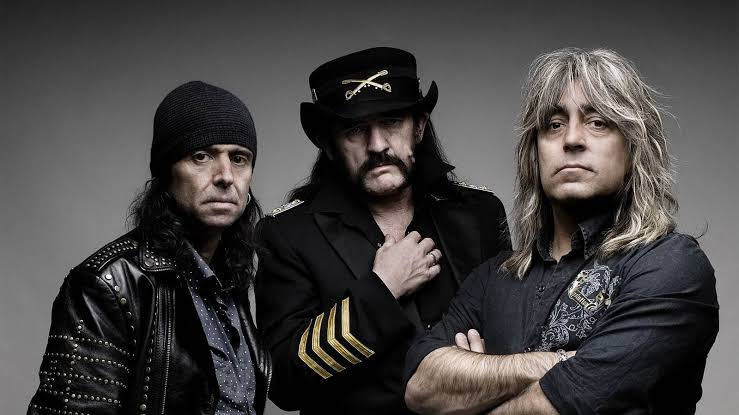
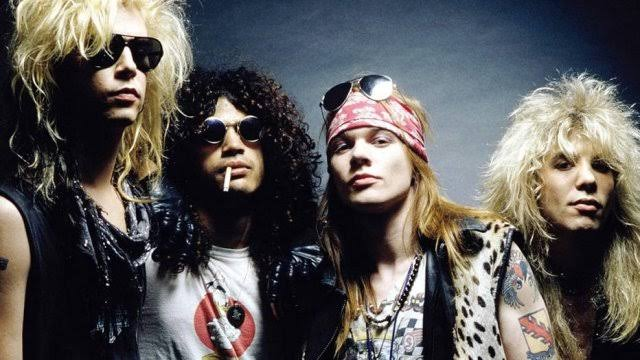
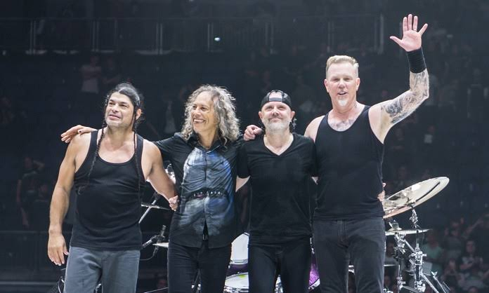
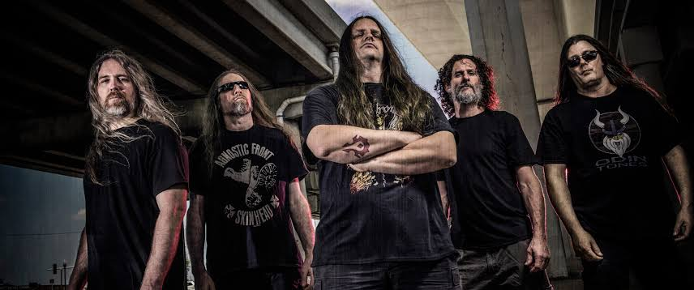
Heavy metal:Por muitos entendido como um estilo a parte, nessa década veio a se tornar um movimento contra o punk rock, primando pela qualidade musical e destreza de seus músicos, sem perder a força das letras.
Principais Nome: Iron Maiden, Judas Priest, Helloween, Motörhead, Saxon, King Diamond e Accept. Hair Metal: É um subgênero do heavy metal, que combina elementos do hard rock com o punk rock e a música pop. Os integrantes cultivavam uma aparência andrógina não só com cabelos longos, mas também um guarda-roupa em que as cores e o brilho ressaltaram. As performances no palco mudaram radicalmente.
Principais Nome: Kiss, Van Halen, Poison, Bon Jovi, Mötley Crüe, Guns N’ Roses, Mr. Big, Skid Row, Quiet Riot e Twisted Sister. Thrash metal: É mais um subgênero do heavy metal caracterizado por seu ritmo rápido e agressividade. As canções usualmente têm batidas rápidas e riffs de guitarra que regem a música, intercalados com solos ao estilo shred. As letras são sempre sobre violência e repúdio ao estado e a economia. De linguagem agressiva as letras são quase sempre gritadas, como uma manifestação ou pedido de socorro.
Principais Nome: Metallica (primeiros trabalhos), Megadeth, Slayer, Sodom, Anthrax, Pantera e Sepultura. Death metal: O death metal é bem semelhante ao Black Metal, porém sua temática é mais ligada às aflições do corpo. Torturas, doenças, expurgos em geral.
Principais Nome: Death, Morbid Angel, Cannibal Corpse, Carcass e Napalm Death.
Década de 90
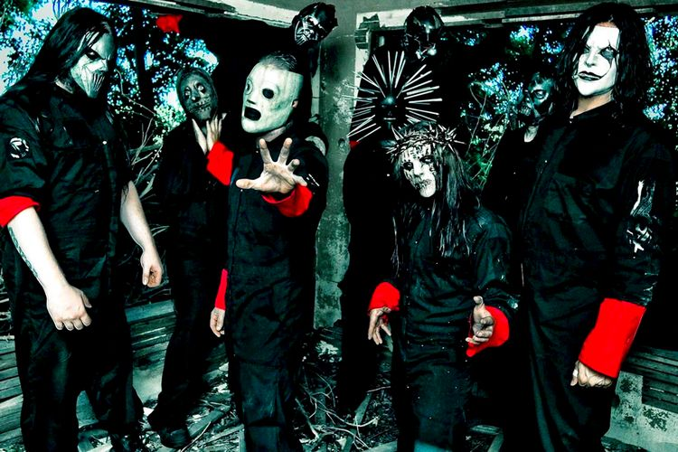
Grunge: O desprendimento visual do punk, com a união do clássico. Melodia intensa com poucos acordes, somadas à polidez do som e letras relacionadas a depressão e angústia.
Principais Nome: Nirvana, Pearl Jam, Alice in Chains, Soundgarden e Mudhoney. Indie rock: As bandas “independentes” chegam bem famosas nos anos 90. O legal era gostar de coisas que ninguém gostava. Nessa onda underground, as bandas de garagem foram se popularizando. As canções românticas chegaram fortes.
Principais Nome: Radiohead, Pixies, The Strokes, White Stripes, Coldplay, Travis e Belle & Sebastian, além de algumas bandas britpop. New metal: A mistura dos sons urbanos chegam intensas no rock dos anos 90. O rap e a música eletrônica viram influências para diversas bandas de rock. A sonoridade pesada e o esquema de mistura com as letras faladas do rap chegam pra cair com o antigo purismo.
Principais Nome: Korn, Linkin Park, Static-X, Limp Bizkit e Slipknot.


 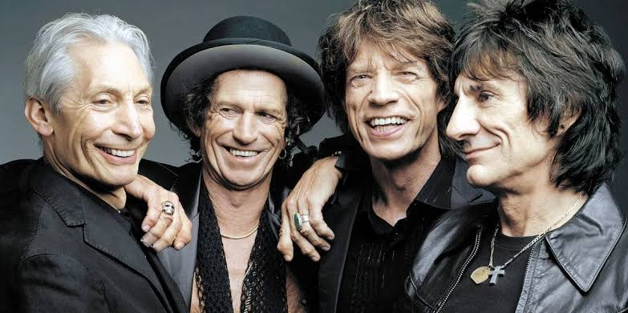
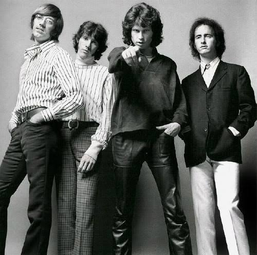
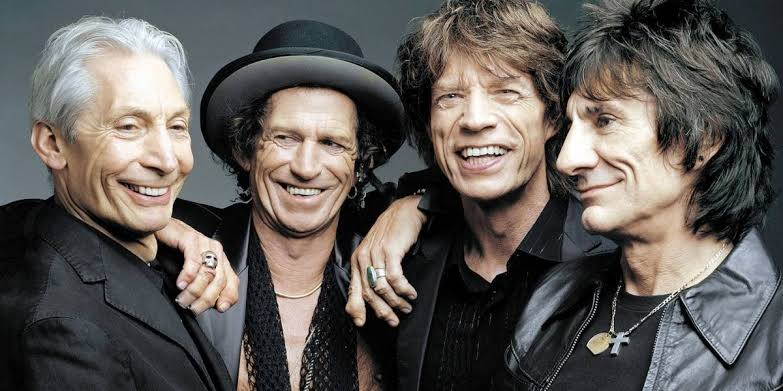
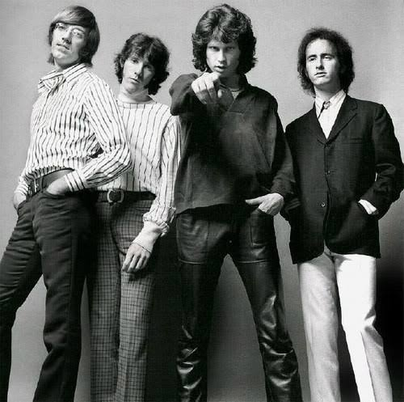


 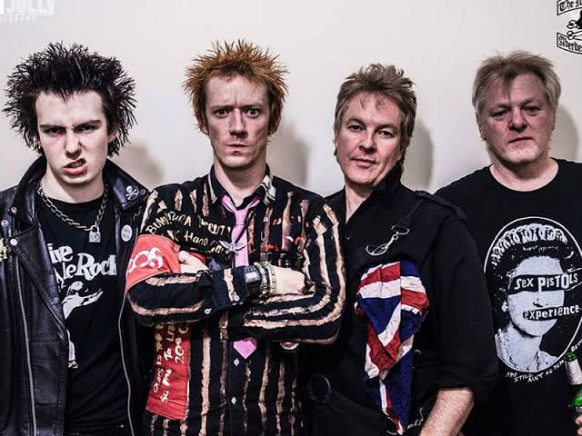
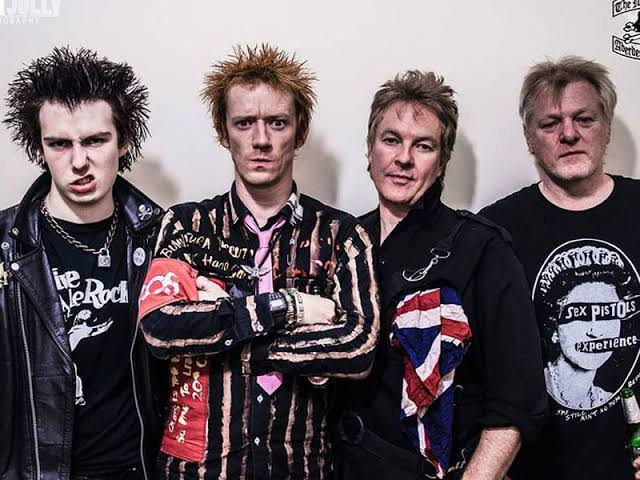

 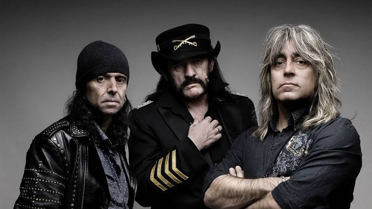
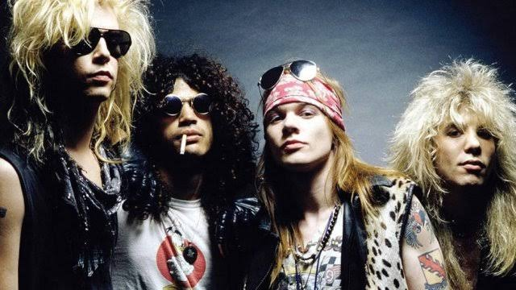
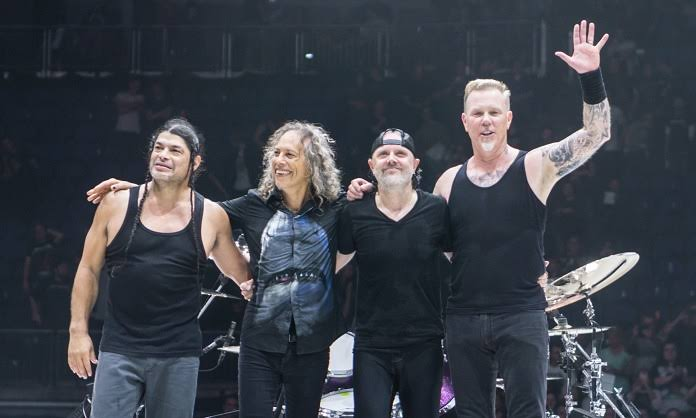
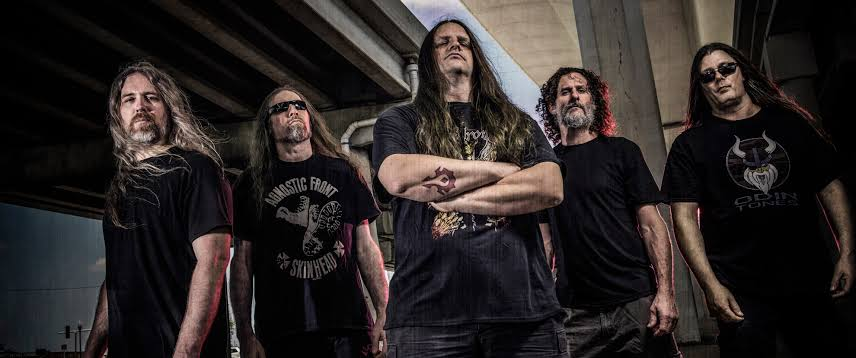
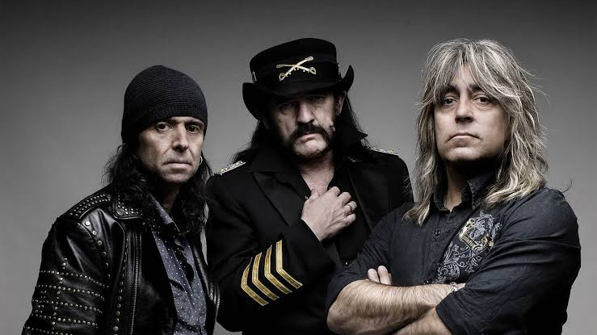
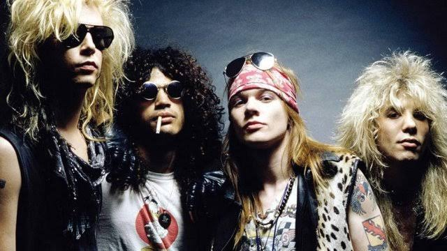
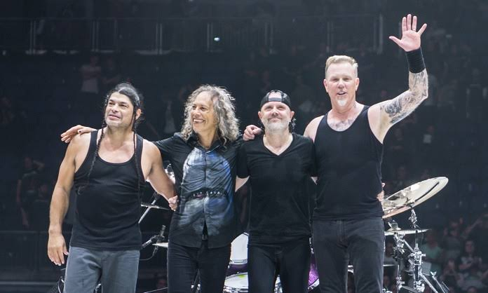
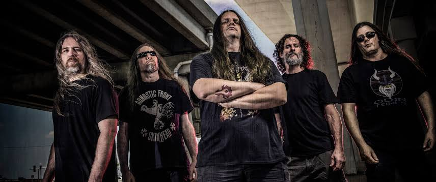
 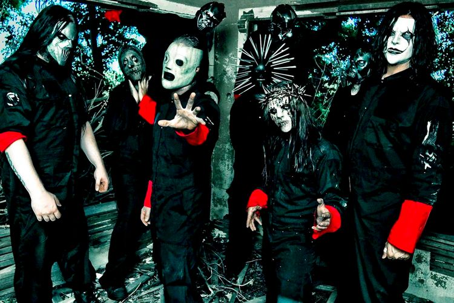
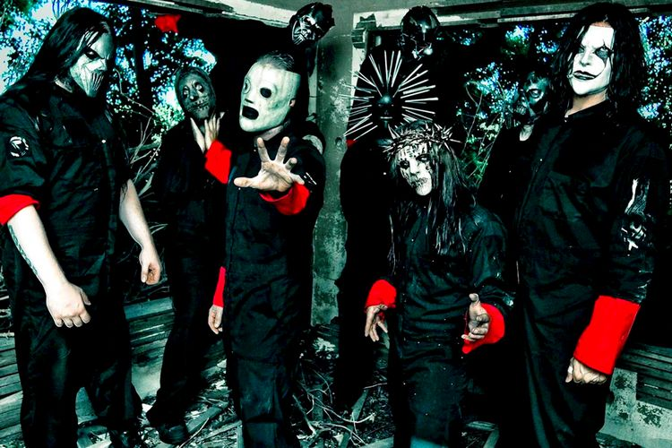